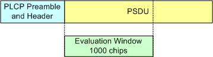
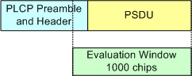

Measurement Scope for R&S CMW500/2xx with BB Meas
For OFDM signals, the WLAN multi-evaluation measurement evaluates the whole WLAN burst. A burst includes PLCP preamble, PLCP header, PSDU (payload) and tail/pad bits, with up to 1024 OFDM symbols for MIMO signals.
You can skip a configurable number of head and tail symbols for modulation measurements, see "Skip OFDM Symbols". Skipping symbols is useful, for example, for "Composite MIMO Measurements".
For DSSS signals, you can configure the evaluation length (see "Evaluation Length"):
- Whole burst:
The entire burst is evaluated, including PLCP preamble, PLCP header and PSDU (payload). Measurement results are determined for all chips within the burst. Graphical presentations (traces) show up to 1000 values distributed over the entire burst. - 1000 chips:
The first 1000 chips of the PSDU are evaluated (see figure below). If the PSDU consists of less than 1000 chips, the evaluation window covers the entire PSDU and a part of the header/preamble as shown in the second figure below.
Reducing the evaluation length to 1000 chips speeds up the measurement of long period bursts. According to IEEE, the EVM must be measured for 1000 samples, see "Modulation Limits DSSS".
1000 samples is the default setting.

Eval. window, payload > 1000 chips

Eval. window, payload < 1000 chips